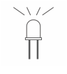
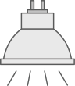
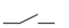
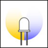

Specific lamps
Description
Documents by various manufacturers listed in the table below are included as examples.
DALI type | Name | Device type | Example |
| Identification in Web interface |
|---|---|---|---|---|---|
DALI device with product information | Output devices, lamps, actuators | ||||
0 | FL | Fluorescent lamp
| Tridonic PCA T5 ECO Ip xitec II, 14‑80 W Dimmable ballast for fluorescent lamps Tridonic | Circline 22W, 40W, 55W T5 HE 14W, 21W, 28W, 35W T5 HE 24W, 39W, 54W, 80W/49W Dulux 13W, 18W, 26W, 42W Dulux L 18…80W | G-FL |
6 | LED | LED module  | Zumtobel PANOS Infinity LED ceiling-recessed luminaire* Zumtobel | Tunable white LED modules only (mono-color) LED Systems and individual LED boards, no RGB color | LED |
5 | CNV | Direct current converter (Conversion from digital signal into DC voltage)
| Osram DALI CON 1…10 LI Converter for installation in luminaries (LI) Osram | T5 HE 14W, 21W, 28W, 35W T5 HE 24W, 39W, 54W, 80W/49W Dulux 13W, 18W, 26W, 42W | CNV |
Helvar DIGIDIM 472 1‑10 V and DSI converter Ballast controller and converter Helvar | |||||
3 | LV | Low-voltage halogen lamp  | Osram HALOTRONIC HTi DALI 105/230…240 DIM Dimmable electronic transformer for lowvoltage lamps | Decostar 20W-50W Halospot 20W-50W Halospot (AR111) 35W-75W Halostar / Eco 7W-100W | LV |
Trionic DALI PCD-300 one4all Leading-edge and trailing-edge phase dimmer** | |||||
Trionic TE 0150 one4all sc, 50‑150 VA 230‑240/12 V 0/50/60 Hz* Tridonic | |||||
7 | SWI | Switching function  | Osram DALI Switch SO Signal converter for LMS Osram | All non-dimmable ballasts and lamps | SWI |
8 | RGB | Color control  | Tunable white LED modules only. RGB control not possible.
| RGB |